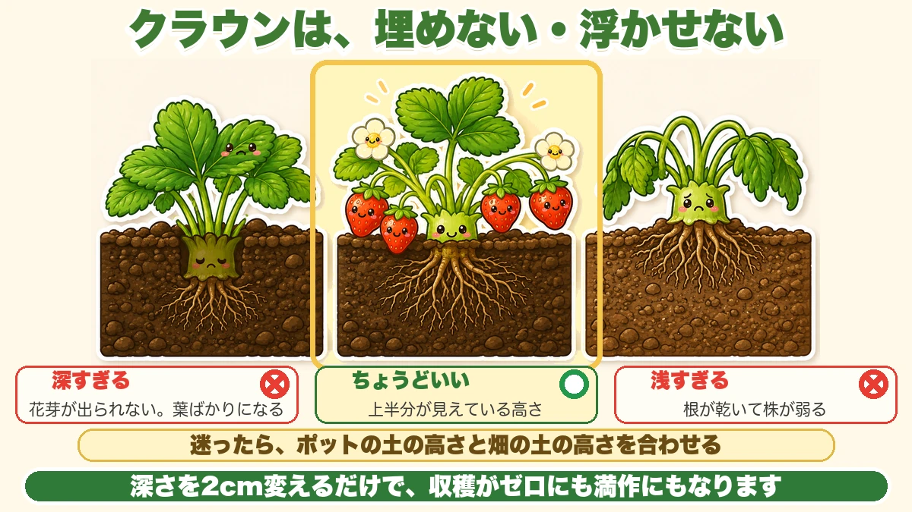
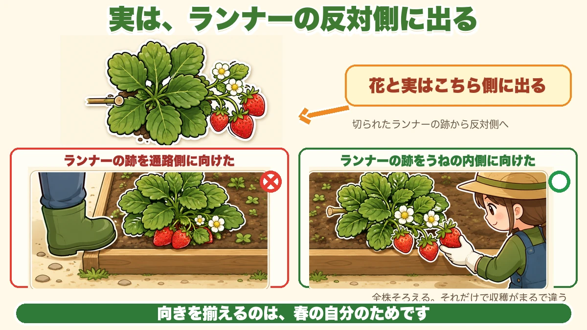
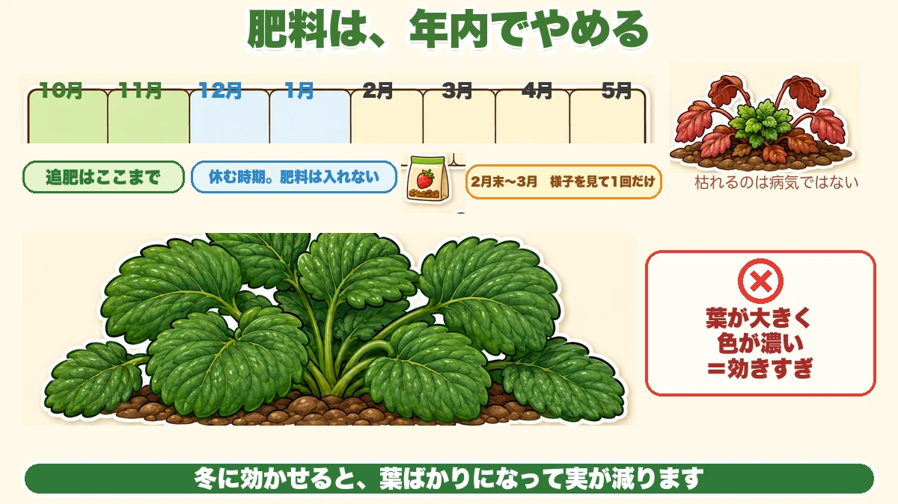

いちごは、埋めた瞬間に実が消えます🍓 クラウンを出す話
🍓「いちご、葉ばかり茂って実がつきませんでした」
🍓「植えるとき、深さなんて気にしていなかった」
🍓「実が土について、腐ってしまった」
どうも、8150（えいこう）です🌱 家庭菜園歴8年、理科の教員免許を持っていて、有機・無農薬で野菜を育てています。
今日は、いちごの植え付けです。
先に、この記事でいちばん言いたいことを言っておきますね。
★いちごは、株の中心を埋めると実がつきません。
いちごの株をよく見ると、葉の付け根が集まっている、太くて短い茎のような部分があります。★ここをクラウンと呼びます。王冠という意味です。
このクラウンから、葉も、根も、そして花も出ます。★ここが埋まると、花が出てこられません。
深さを2cm変えるだけで、収穫がゼロになったり、たっぷり穫れたりする。★いちごは、植えた瞬間にほぼ決まる野菜です。
※以下の時期は中間地（関東〜関西の平野部）が目安。
クラウンは、埋めない・浮かせない

正解は「クラウンの下半分が土に触れる」
言葉にすると難しいので、目安を書きます。
★クラウンの上半分が、地面から見えている状態。これが正解です。
深すぎると花芽が出ず、葉ばかりになります。★逆に浅すぎると、根が乾いて株が弱ります。どちらもよくある失敗です。
ポットの土の高さに合わせる
いちばんかんたんな見分け方があります。
★ポットの土の表面と、畑の土の表面を、ぴったり同じ高さにする。
苗屋さんは、ちょうどいい深さで育てています。★その高さをそのまま持ってくれば、まず外しません。
植えたあと、水をやると土が沈みます。★沈んでクラウンが埋まったら、指でそっと土をよけてあげてください。
私の失敗
一昨年、20株植えて、実がついたのは半分くらいでした。
原因はあとで分かりました。★植えたあとに、株元へ丁寧に土を寄せてしまっていたんです。よかれと思ってやったことでした。
土を寄せた株ほど、葉が立派で、花が咲きませんでした。★親切のつもりが、いちばんの邪魔でした。
向きを揃えると、収穫がラクになります

ランナーの跡を、通路側に向ける
苗の株元をよく見ると、細いつるが切られた跡があります。★これがランナーの跡です。親株とつながっていた側です。
ここが面白いところで、★いちごの花と実は、ランナーの跡と反対側に出ます。
つまり★ランナーの跡を通路側に向けて植えると、実は全部うねの内側に出ます。これだと実が通路に落ちて、踏みます。
逆に★ランナーの跡をうねの内側に向けて植えると、実が通路側に垂れて、しゃがまずに穫れます。
全部同じ向きに揃える
20株あっても、やることは同じです。★全部、ランナーの跡をうねの中央に向ける。
これだけで、収穫のとき実を探さなくて済みます。★向きが揃っているだけで、作業がまるで違います。
実を土につけない工夫
敷きわらか、黒マルチ
いちごの実は、土に触れると高い確率で傷みます。雨で泥がはねると、そこから傷みが広がります。
対策は2つです。
- ★黒マルチを張って、その上に実を乗せる
- ★敷きわらを厚めに敷く
私は黒マルチにしています。★地温が上がって春の生育が早まるのと、雑草が生えないのが理由です。
マルチを張るのは、いつか
ここは意見が分かれるところです。
★植えるときに張ってもいいですし、寒くなる前の12月でも間に合います。
私は★2月ごろに張っています。冬のあいだは土をむき出しにしておいて、寒さにしっかり当てるためです。
いちごは、★一定の期間しっかり寒さに当たらないと、春に花芽が動き出しません。早く暖めたほうがいいと思ってマルチを急ぐと、かえって遅くなることがあります。
★焦らないほうが、結果として早い。いちごはそういう野菜です。
肥料は、年内でやめます

止める時期がある
いちごは、★12月以降に肥料が効いていると、葉ばかり茂って実が減ります。
だから追肥は★11月まで。年が明けたら、2月末か3月に1回だけ、様子を見て足すくらいでちょうどいいです。
元肥も控えめに。★堆肥を軽く入れる程度で、油かすや鶏ふんを効かせすぎないでください。
肥料が多いと、はっきり分かるサインが出ます。★葉が大きくなりすぎて、色が濃い緑になります。手のひらより大きい葉が出てきたら、確実に効きすぎです。
そうなったら、もう足さない。★春まで待って、株が自分で落ち着くのを待ちます。
冬に葉が枯れても、慌てない
12月から2月にかけて、外側の葉が赤くなって枯れていきます。★これは病気ではありません。
いちごは冬に休みます。★葉を減らして、株の中心と根に力をためています。
枯れた葉は、そのままにせず取り除いてください。★病気の元になるのと、風通しが悪くなるからです。中心の新しい葉だけ残っていれば大丈夫です。
学ぶ：いちごの「実」は、実ではない🔬
理科の時間です。
いちごの表面に、小さなつぶつぶがついていますよね。★あれがいちごの本当の実です。ひとつひとつが、種を包んだ果実です。
では、赤くて甘い部分は何かというと、★花の土台がふくらんだものです。花托と呼ばれます。
つまり口にしているのは、実の周りではなく、★実を乗せている台のほうなんです。
面白いのはここからで、★つぶつぶの数が多いほど、赤い部分は大きくなります。つぶつぶがホルモンを出して、下の台をふくらませているからです。
いびつな形のいちごを見たことがありませんか。★あれは、受粉がうまくいかなかったつぶつぶがある側だけ、ふくらまなかった形です。
お子さんと一緒なら、★いびつな実を1つ選んで、へこんだ側とふくらんだ側のつぶつぶを数えてみてください。★はっきり差が出ます。花のときにミツバチが来たかどうかが、形に残っているんです。
まとめ
ここまで読んでくださって、ありがとうございました。
いちごは、植えるときの2つだけ守れば、あとは春を待つだけです。
- ★クラウン（株の中心）は埋めない。上半分が見えている高さが正解
- ★迷ったら、ポットの土の高さと畑の土の高さを合わせる
- ★水やり後に沈んで埋まったら、指で土をよける
- ★ランナーの跡をうねの内側に向けると、実が通路側に垂れて穫りやすい
- ★向きは全株そろえる。それだけで収穫がまるで違う
- ★実を土につけない。黒マルチか敷きわらを使う
- ★追肥は11月まで。年明けの肥料は葉ばかりにする
- ★冬に外葉が枯れるのは休んでいるだけ。枯れ葉は取り除く
全部やろうとしなくて大丈夫です。まずは苗を1つ手に取って、★株の中心の太い部分を探してみてください。そこが埋まらないように植える。それだけで実がつきます🍓
次回は、土の酸度の話。★石灰は3種類あって、使う場面が全部ちがいます🧪
いちご苗
クラウンの上半分が見えている高さに植えてください。埋めると花が出ません。
![[商品価格に関しましては、リンクが作成された時点と現時点で情報が変更されている場合がございます。]](https://hbb.afl.rakuten.co.jp/hgb/56d219d2.53a040c0.56d219d3.af4d1b3a/?me_id=1335885&item_id=10000039&pc=https%3A%2F%2Fthumbnail.image.rakuten.co.jp%2F%400_mall%2F15no87%2Fcabinet%2F08573597%2F08577457%2F1bn698.jpg%3F_ex%3D240x240&s=240x240&t=picttext "[商品価格に関しましては、リンクが作成された時点と現時点で情報が変更されている場合がございます。]")

黒マルチ
実が土に触れると傷みます。マルチの上に実を乗せる形にします。

敷きわら
マルチを張らないなら、こちらを厚めに。同じ役目をします。
![[商品価格に関しましては、リンクが作成された時点と現時点で情報が変更されている場合がございます。]](https://hbb.afl.rakuten.co.jp/hgb/56bc2fb2.ff40a6e6.56bc2fb3.618f6a70/?me_id=1257026&item_id=10000211&pc=https%3A%2F%2Fthumbnail.image.rakuten.co.jp%2F%400_mall%2Fsharuka%2Fcabinet%2F09042254%2Fimgrc0081094692.jpg%3F_ex%3D240x240&s=240x240&t=picttext "[商品価格に関しましては、リンクが作成された時点と現時点で情報が変更されている場合がございます。]")
液肥
追肥は11月まで。年明けに効かせると葉ばかりになります。
![[商品価格に関しましては、リンクが作成された時点と現時点で情報が変更されている場合がございます。]](https://hbb.afl.rakuten.co.jp/hgb/56bc2da1.2bf36c6e.56bc2da2.7b66fad7/?me_id=1347284&item_id=10000008&pc=https%3A%2F%2Fthumbnail.image.rakuten.co.jp%2F%400_mall%2Fmandahakko%2Fcabinet%2Fsyokubutsumanda%2F260306_smn_amn5004.jpg%3F_ex%3D240x240&s=240x240&t=picttext "[商品価格に関しましては、リンクが作成された時点と現時点で情報が変更されている場合がございます。]")
あわせて読みたい